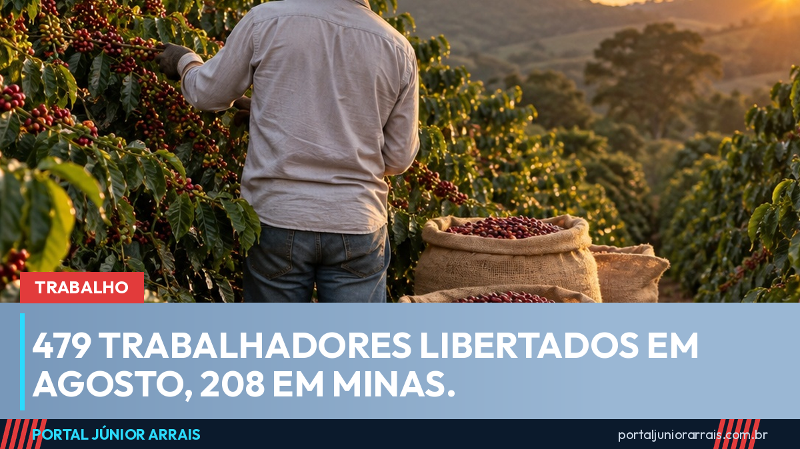

Operação Resgate liberta 479 trabalhadores em agosto e Minas Gerais lidera a lista

Uma força-tarefa federal retirou 479 pessoas de condições análogas à escravidão durante o mês de agosto. Os números são da Operação Resgate VI, divulgados pelo Ministério do Trabalho e Emprego, e foram obtidos em 231 ações fiscais espalhadas pelo país.
Minas Gerais concentrou o maior número de casos: 208 — quase metade do total nacional. Depois vêm São Paulo, com 58, Amazonas, com 42, Piauí, com 40, e Rio Grande do Norte, com 37.
Quem foi encontrado e em quais atividades
Entre os resgatados estão 75 mulheres, 13 crianças e adolescentes e 66 migrantes internacionais. Os setores com mais ocorrências foram:
- construção civil, com 85 trabalhadores;
- cultivo de café, com 53;
- cultivo de cebola, com 47;
- cultivo de batata-inglesa, com 44.
A operação reuniu cinco órgãos: Ministério do Trabalho e Emprego, Ministério Público do Trabalho, Ministério Público Federal, Defensoria Pública da União e Polícia Federal. Ao todo, foram pagos mais de R$ 1,4 milhão em verbas trabalhistas e rescisórias aos resgatados.
O que a lei assegura a quem é resgatado
Ser retirado dessa situação não significa apenas sair do local. A legislação brasileira prevê um conjunto de direitos, e o principal deles é o seguro-desemprego especial do trabalhador resgatado: seis parcelas de um salário mínimo, hoje em R$ 1.621,00 cada.
Além disso, o empregador é obrigado a pagar as verbas rescisórias como em qualquer dispensa sem justa causa — saldo de salário, aviso prévio, férias proporcionais com o terço, décimo terceiro proporcional, FGTS e a multa de 40%. O vínculo é reconhecido e registrado, mesmo que nunca tenha havido carteira assinada.
Esse seguro-desemprego é diferente do comum e não consome as parcelas a que o trabalhador teria direito em uma demissão futura — tema que o portal já detalhou na matéria sobre valores e regras do seguro-desemprego em 2026.
Minas no topo, de novo
A posição de Minas Gerais não é novidade deste mês. O estado já vinha liderando as estatísticas, como mostramos na matéria sobre os 5,6 mil resgatados em Minas ao longo dos anos. A concentração se explica em boa parte pela lavoura de café, que emprega muita gente por temporada e em regiões de difícil fiscalização.
Cuidado com golpe
Aparece com frequência quem promete "liberar o seguro do trabalhador resgatado" mediante pagamento de taxa, ou quem cobra para "adiantar as parcelas". Não existe cobrança para receber esse benefício, e nenhum órgão público pede Pix, senha ou foto de documento por mensagem.
Trabalhador que passou por situação assim — ou família que desconfia de que um parente esteja nessa condição — deve procurar um profissional de sua confiança para orientar sobre a documentação e os caminhos disponíveis.
Conteúdo informativo — não substitui orientação individualizada sobre o seu caso.
Júnior Arrais · Editor do Portal Júnior Arrais
Comunicador de Ubá (MG). Escreve todos os dias sobre benefícios sociais, INSS, trabalho e economia do dia a dia, a partir do Diário Oficial, de portarias e de fontes oficiais, em linguagem simples. Conheça a linha editorial e a política de correções do portal.